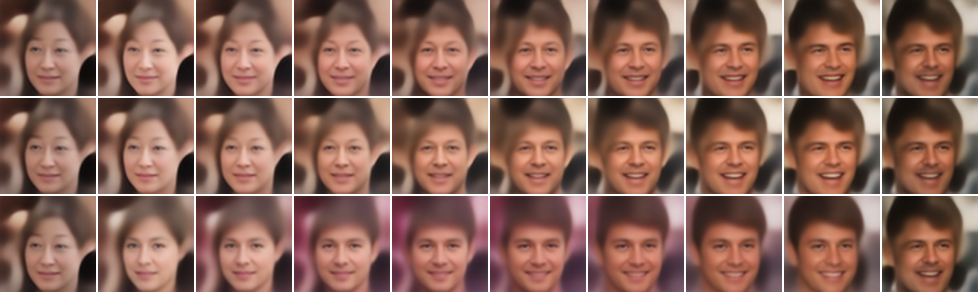

Autoencoder vs VAE
We've built both models and looked at them from every angle. Now let's put them side by side on everything we measured: reconstruction, latent space, generation and interpolation, and say plainly what I take away.
1.The two models in one table
| Autoencoder | Variational Autoencoder | |
|---|---|---|
| encoding | deterministic: \(z = f_\theta(x)\) | a distribution: \(q_\phi(z\mid x)=\mathcal N(\mu, \sigma^2)\) |
| latent space | unregularised: any shape, gaps | pulled toward the prior N(0, I) |
| loss | reconstruction | reconstruction + β · KL |
| reconstruction | yes (slightly sharper at large d) | yes |
| sampling | not reliable from N(0, I); needs a fitted Gaussian | designed for it: sample N(0, I) |
| extra knob | none | β (sharp ↔ tidy) |
| cost | same network and speed; the VAE adds one Linear head (12–15 M parameters either way) | |
2.Reconstruction
Test PSNR, both datasets
reconstructed3.Latent space
The same 2-number latent plane, three models (IXI)
background: decoded grid4.Generation and interpolation
FID of samples (IXI)
generatedFID of samples (CelebA)
generatedFigure 8.3. Lower is better; dotted = real vs real. With a fitted Gaussian, the AE generates as well as the VAE, and better on brains at large d.
Interpolation, faces (d = 128)
generated faces only
5.Results at a glance
6.What I take away
- More latent numbers, better reconstructions, on both datasets, with diminishing returns. Brains flatten after about 16 numbers; faces keep improving to 128.
- AE and VAE β=0.1 are tied up to about 16 numbers. Beyond that the AE is a little sharper, because the KL term costs the VAE some precision.
- β = 1 has a hard ceiling. It switches off most latent numbers (21 of 128 used on brains), so extra dimensions are wasted.
- The VAE's real win is the map, not the samples. Its latent space is compact, centred and smooth, so you can sample and walk it directly. But on these datasets, an AE plus a fitted Gaussian generates just as well.
- All of these images are blurry, because every model uses a pixel-wise loss. That is the limitation the next parts of this series go after.
- Plot your validation curves. My first run overfit from epoch 6 and I almost didn't notice.
When to use which
- Compression, denoising, anomaly detection, features: an AE is simpler and reconstructs a bit better.
- Sampling, smooth interpolation, a structured latent space to explore: a VAE with a small β (around 0.1 here).
- Sharp, realistic samples: neither. That's what GANs and diffusion models are for.
7.What comes next
Everything in this part was limited by one thing: the pixel-wise loss makes every image a blurry average. In the upcoming parts of this Deep Generative Models series we will go after exactly that, with the same datasets and the same honest numbers: diffusion models (learning to remove noise step by step), then world models and JEPA (predicting in latent space instead of pixel space).
Code, models and demo
- Autoencoder code and results: github.com/ChandraPrakash-Bathula/Auto-Encoders
- VAE code and results: github.com/ChandraPrakash-Bathula/Variational-AutoEncoders
- Trained weights: AE on Hugging Face · VAE on Hugging Face
- Live demo: MedLatent Studio (Hugging Face Space)
References
- Hinton, Salakhutdinov (2006). Reducing the dimensionality of data with neural networks. Science.
- Kingma, Welling (2013). Auto-Encoding Variational Bayes. arXiv:1312.6114.
- Higgins et al. (2017). β-VAE. ICLR.
- Ghosh et al. (2020). From Variational to Deterministic Autoencoders. ICLR.
- van der Maaten, Hinton (2008). t-SNE. JMLR · McInnes et al. (2018). UMAP. arXiv:1802.03426.